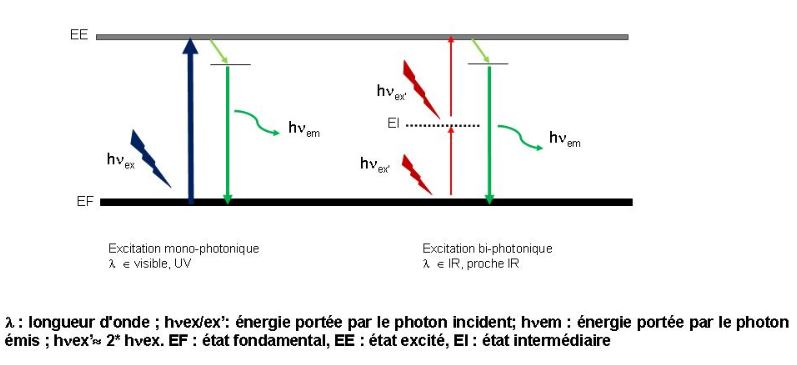
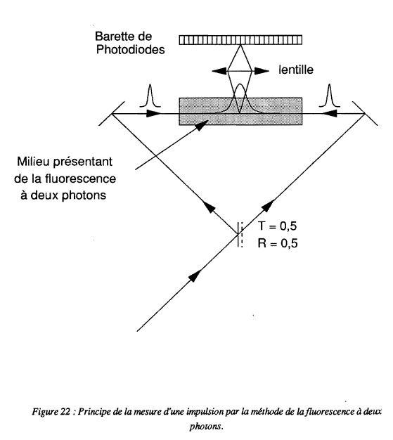
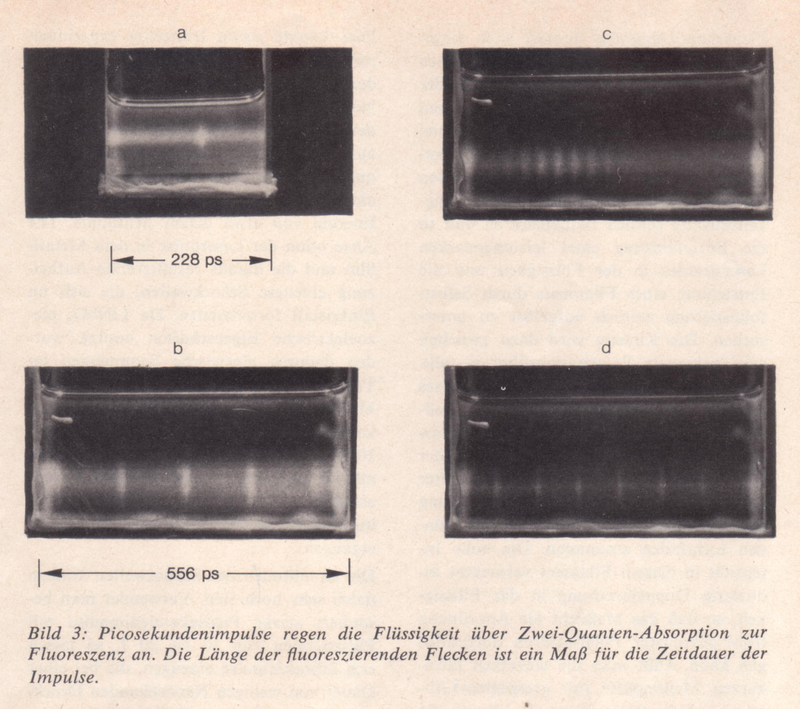
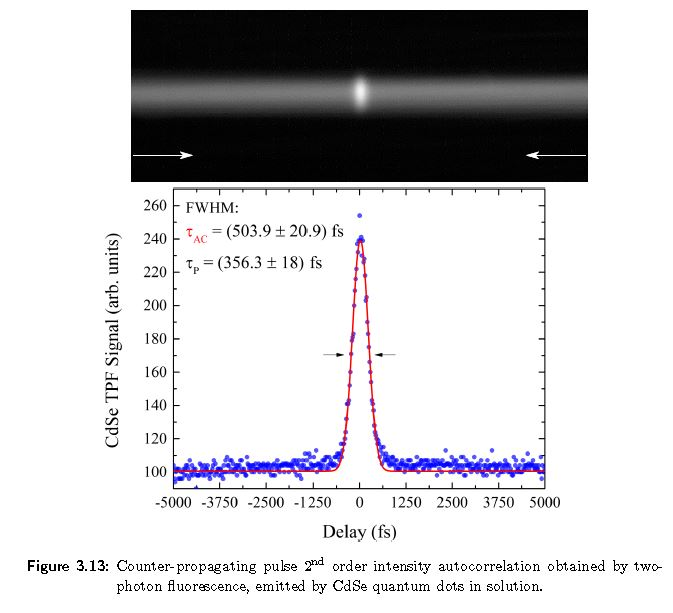
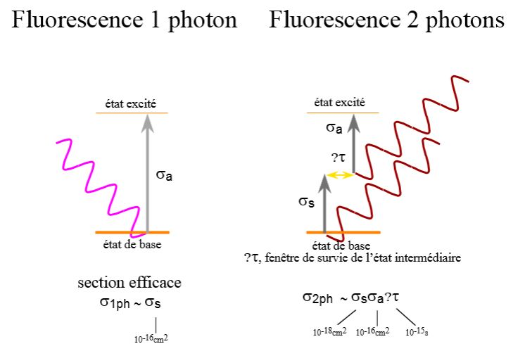
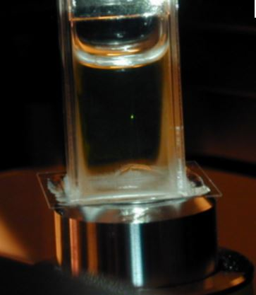
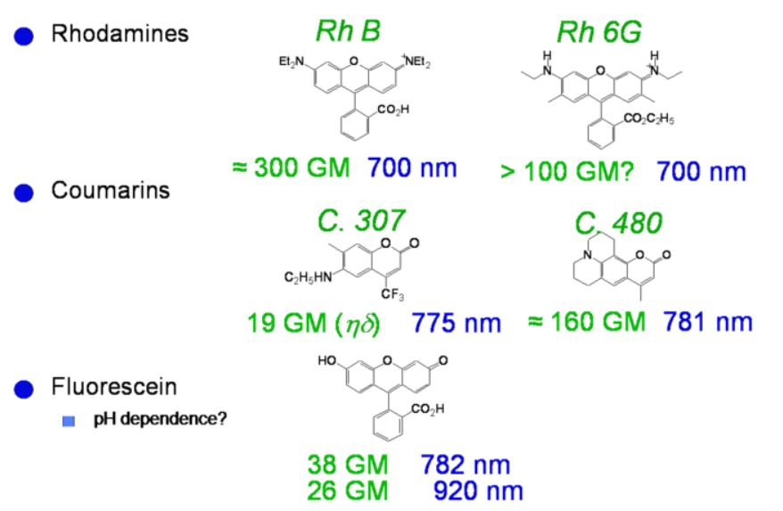
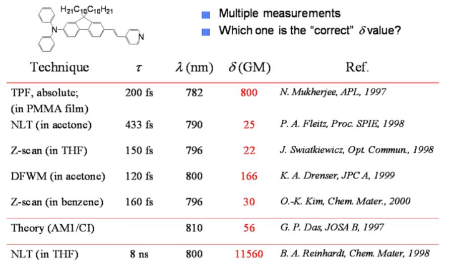
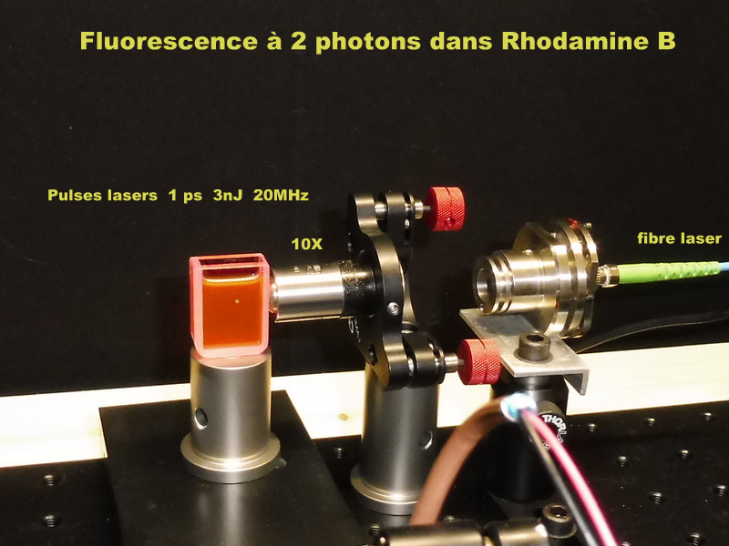

The two-photon fluorescence autocorrelator is the first method used to measure picosecond laser pulses in the 1960s.
This is a method of direct visualization of pulse duration that uses double absorption in a dye molecule .



Here we visualize a pulse train of about 20ps emitted by a YAG laser coupled modes in Rhodamine 6G.

Text:


here is a double photon emission confined in space by a lens it is not a measure of temporal autocorrelation!
Unit Goppert-Mayer 1 GM = 1.10 -50 cm 4.s photons


Principle of intensimetric autocorrelation.
Principle of interferometric autocorrelation.

The experiment consists in obtaining the 2-photon fluorecence in a dye such as Rhodamine B by means of infrared laser pulses at 1030 nm whereas Rhodamine B requires to obtain a fluorescence of photons between 450 and 540 nm!
The realization of the experiment is being prepared ....... photos and measurements will follow!